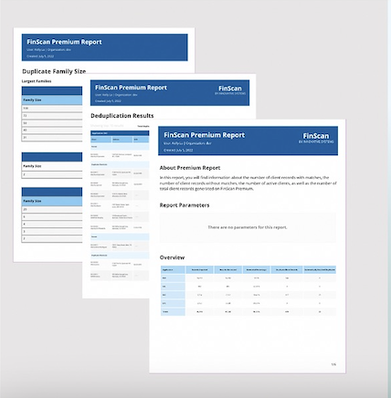
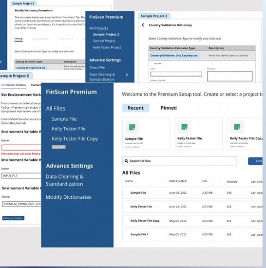

I am a proficient User Experience (UX) Designer based in Saint Petersburg, Florida, proficient in delivering holistic UX/UI design resolutions for digital products. My passion lies in elevating user experiences and positively impacting livers through meticulous design, while displaying unwavering dedication to perpetual growth, staying at the forefront of cutting-edge trends and methodologies.